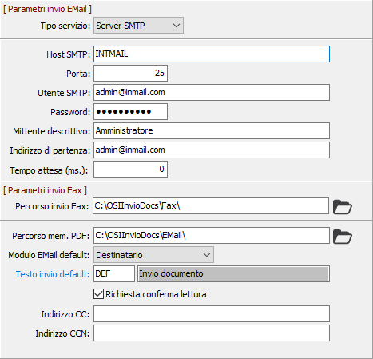

Nel caso di invio a mezzo e-mail attraverso la configurazione è possibile definire se l’invio utilizzata la tecnologia MAPI oppure quella SMTP oppure tramite Outlook (OLE Automation). La tecnologia MAPI ha il vantaggio di archiviare i documenti all’interno del gestore di posta (Outlook) ma ha lo svantaggio di dover richiedere una conferma aggiuntiva per ciascuna e-mail da inviare. La tecnologia SMTP ha il vantaggio di essere assolutamente trasparente e rapida (nel senso che non viene richiesta nessuna conferma aggiuntiva) ma il messaggio non viene archiviato dal gestore di posta.
Nel caso di invio a mezzo fax viene utilizzato il servizio Fax di Windows. A tale scopo è stata introdotta una nuova applicazione OSIFax (la cui installazione è presente nell’area Componenti client del presente CD) che si preoccupa di inviare i documenti generati da OS1 al servizio Fax di Windows.
La tabella consente appunto di configurare i parametri di base relativi all'invio di documenti; la parametrizzazione è comunque modificabile per singolo utente di OS1 tramite il programma di configurazione Utenti presente nel relativo menù di OS1.
NB: per utilizzare account di tipo SSL e/o TLS il campo “Utente SMTP" deve essere codificato facendo seguire all’indirizzo di posta SMTP: SSL per protocollo SSL e TLS per protocollo TLS, come nell’esempio riportato di seguito:
utente@gmail.com:SSL nel caso si voglia utilizzare il protocollo SSL con port 465
utente@gmail.com:TLS nel caso si voglia utilizzare il protocollo TLS con port 587

TIPO SERVIZIO: Indica il tipo di servizio email, valori ammessi:
Server MAPI (utilizzo di un client di posta elettronica per esempio OutLook)
Server SMTP (utilizzo di un server SMTP)
Outlook (OLE Automation)
HOST SMTP: Definisce il nome dell'host per l’invio di email tramite SMTP. (Il campo è visibile solo se è gestito il servizio Server SMTP).
PORT: Definisce il numero della porta per l’invio di email tramite SMTP (la porta di default per i server SMTP è la 25). (Il campo è visibile solo se è gestito il servizio Server SMTP).
UTENTE SMTP: Definisce L'utente per l’invio di email tramite SMTP. (Il campo è visibile solo se è gestito il servizio Server SMTP).
PASSWORD: Definisce la password per l’invio di email tramite SMTP. (Il campo è visibile solo se è gestito il servizio Server SMTP).
MITTENTE DESCRITTIVO: Indica il nome del mittente.
INDIRIZZO DI PARTENZA: Definisce l’indirizzo email dal quale vengono inviati i documenti.
TEMPO ATTESA (MS.): Indicare il tempo di attesa (espresso in millisecondi) tra l'invio delle email.
PERCORSO INVIO FAX: indicare il percorso di transizione in cui saranno memorizzati i files relativi ai documenti da inviare per fax.
PERCORSO MEMORIZZAZIONE PDF: indicare il percorso di transizione in cui saranno memorizzati i files PDF relativi ai documenti da inviare.
MODULO EMAIL DEFAULT: definisce la copia, relativa alle copie dei documenti, da utilizzare come modello per l'invio; valori ammessi: Destinatario, Mittente, Amministrativo.
TESTO INVIO DEFAULT: indica il codice relativo alla tabella dei testi invio da utilizzare come default per l'invio dei documenti; sul campo sono attive le funzioni di ricerca (F9).
RICHIESTA CONFERMA LETTURA: se spuntata indica di inviare il messaggio con la richiesta di conferma di lettura da parte del destinatario.
INDIRIZZO CC: Definisce l’indirizzo email al quale vengono inviati i documenti per conoscenza.
INDIRIZZO CCN: Definisce l’indirizzo email al quale vengono inviati i documenti per conoscenza non visibile agli altri indirizzi.